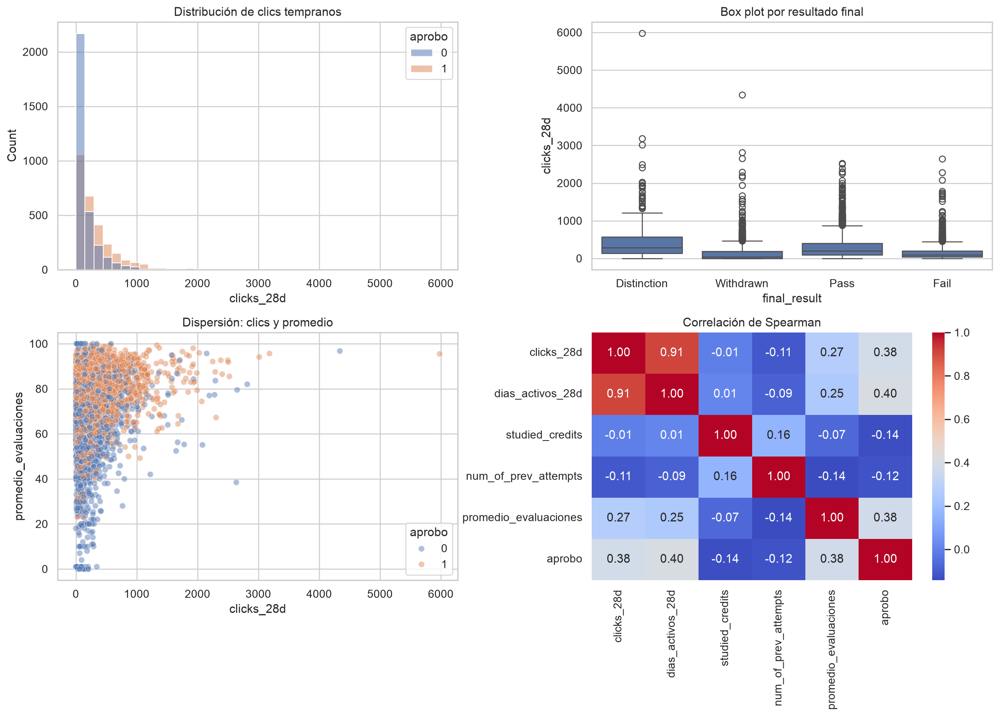

¿Aprueba o no aprueba?
Compara regresión logística, random forest y gradient boosting.
Proyecto final colaborativo para predecir aprobación, resultado ordinal y promedio de evaluaciones mediante un flujo OSEMN encapsulado con POO, datos OULAD y un Experimento X sintético y reproducible.
La solución usa variables disponibles durante los primeros 28 días para reducir fuga temporal. OULAD aporta registros anónimos de aprendizaje en línea y el Experimento X aporta un escenario sintético complementario. La fuente no se utiliza como predictor.
Compara regresión logística, random forest y gradient boosting.
Modela retiro, reprobación, aprobación y distinción respetando su jerarquía.
Compara Ridge, random forest y gradient boosting mediante MSE y R².
La distribución de clics durante los primeros 28 días difiere entre quienes aprueban y quienes no aprueban. Se evalúa con Mann-Whitney U y efecto biserial.
Resultado: U = 223,548,383; p < .001; r = .455.
La actividad temprana, los antecedentes académicos y variables demográficas permiten predecir resultados mejor que una referencia sin información.
Resultado: mejor ROC-AUC = .798 y R² continuo = .222.
Cada fase tiene una responsabilidad y una clase principal. Esto facilita pruebas, mantenimiento y colaboración entre integrantes.
OULADRepository: descarga y agregación de datos.ExperimentXFactory: escenario anónimo reproducible.FeatureEngineer: limpieza y variables derivadas.EDAReporter: análisis exploratorio y contraste H1.ModelLab: entrenamiento, evaluación y exportación.OULADProject: orquestación del flujo completo.
ResultRegistry extiende UserDict y registra cada
ModelResult por tarea y algoritmo. Es la evidencia del TAD/collection
solicitado por la consigna.
python3 run.py python3 run.py --synthetic-only python3 -m pytest -q
| Tarea | Modelo destacado | Métrica principal | Lectura |
|---|---|---|---|
| Dicotómica | Gradient boosting | F1 = .719; ROC-AUC = .798 | Mejor equilibrio general para aprobación. |
| Ordinal | Random forest / gradient boosting | F1 = .438 / MSE = .902 | La selección cambia según equilibrio o distancia ordinal. |
| Intervalo/razón | Gradient boosting | MSE = 213.491; R² = .222 | Capacidad explicativa útil, pero limitada. |

La importancia por permutación mide contribución predictiva, no causalidad. Los resultados no deben utilizarse para sancionar o excluir estudiantes.
Abrir importancias completasLa suite verifica cálculos, bordes de datos, reproducibilidad, contratos de salida y estructura de la documentación. No vuelve a entrenar nueve modelos en cada prueba.
python3 -m pytest -q
El Experimento X es sintético y no representa una institución real. Los modelos son evidencia académica y no deben fundamentar decisiones automáticas sobre estudiantes sin validación externa, análisis de equidad, mecanismos de apelación y supervisión humana.